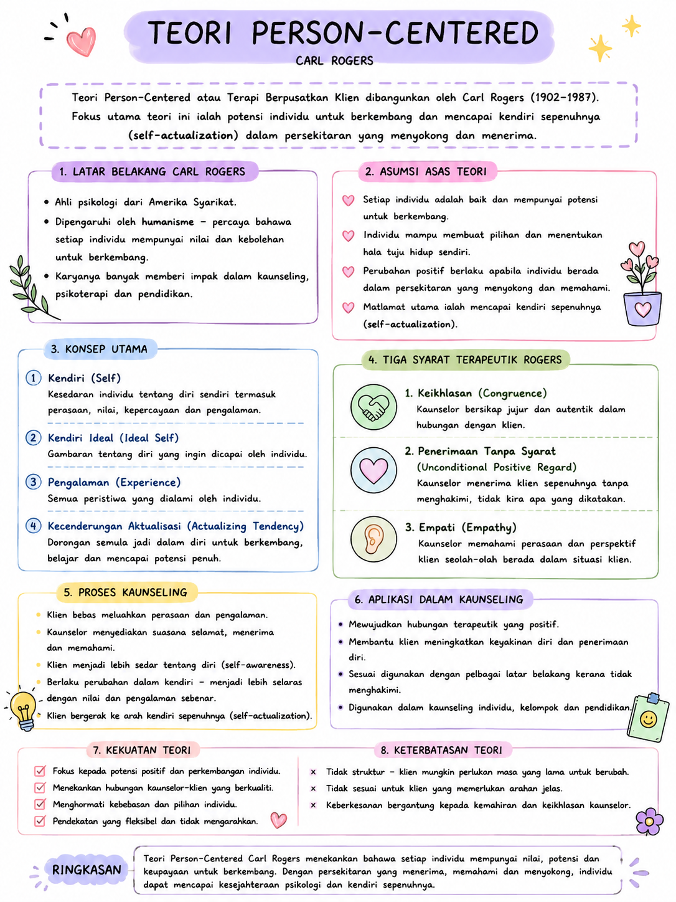
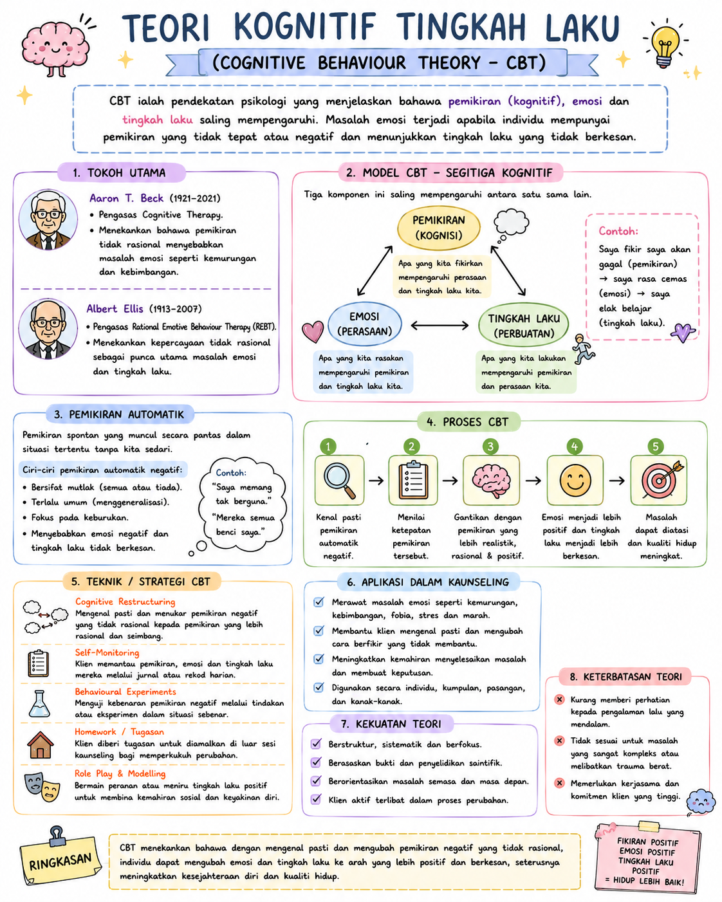
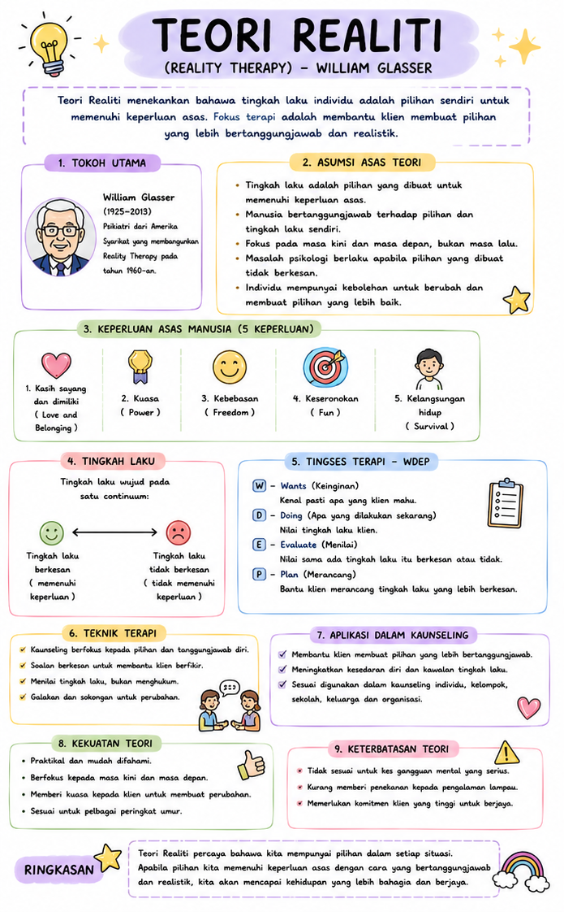
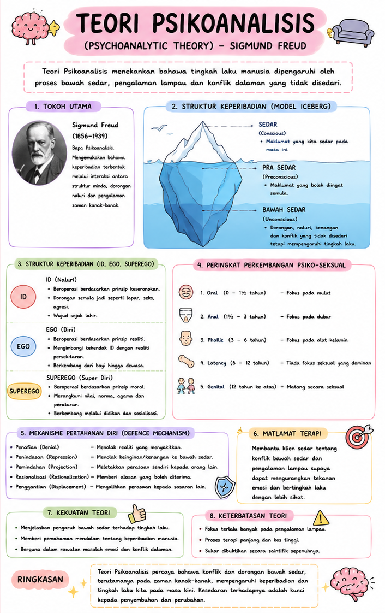
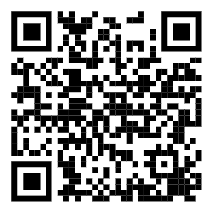

Baca Bijak, Fikir Kritis,
Bina Kemahiran Kaunseling.
e-KAUNSELOR SMART HUB membantu anda mengenal teori kaunseling utama, menganalisis kes sebenar, dan membina kemahiran berfikir kritis melalui 4 alat kemahiran berfikir.
Teori Utama Kaunseling
Teori Person-Centered (Carl Rogers)
- Fokus kepada individu dan pengalaman subjektif klien
- Kepercayaan terhadap potensi diri klien untuk berkembang
- Tiga keadaan teras: Empati, Penerimaan Tanpa Syarat, Ketulenan (Genuineness)
- Matlamat: Perkembangan diri dan aktualisasi kendiri
📄 Nota Ringkas — Teori Person-Centered
🔍 Lihat Nota Penuh
Teori Kognitif Tingkah Laku (CBT)
- Pemikiran negatif mempengaruhi emosi dan tingkah laku
- Mengenal pasti dan mencabar pemikiran tidak rasional
- Teknik: Penstrukturan semula kognitif, latihan tingkah laku
- Matlamat: Mengubah corak pemikiran untuk mengubah tingkah laku
📄 Nota Ringkas — Teori CBT
🔍 Lihat Nota Penuh
Teori Realiti (William Glasser)
- Tingkah laku adalah pilihan individu untuk memenuhi keperluan asas
- Lima keperluan asas: kelangsungan hidup, kasih sayang, kuasa, kebebasan, keseronokan
- Fokus kepada tanggungjawab dan masa kini, bukan masa lalu
- Matlamat: Membantu klien membuat pilihan yang lebih efektif
📄 Nota Ringkas — Teori Realiti
🔍 Lihat Nota Penuh
Teori Psikoanalisis (Sigmund Freud)
- Tingkah laku dipengaruhi oleh proses tidak sedar (unconscious)
- Struktur personaliti: Id, Ego, Superego
- Mekanisme pertahanan diri (defense mechanisms)
- Matlamat: Menyedarkan klien tentang konflik dalaman yang tidak disedari
📄 Nota Ringkas — Teori Psikoanalisis
🔍 Lihat Nota Penuh
4 Alat Kemahiran Berfikir
Peta Bulatan
Brainstorming — terokai idea awal tentang topik.
Peta Pokok
Mengorganisasi — susun maklumat secara sistematik.
Peta Alir
Membuat keputusan — lalukan proses membuat keputusan.
Peta Dakap
Menghubung idea — hubungkan konsep utama dengan idea lain.
Refleksi Pembelajaran
Luangkan masa sejenak untuk merenung kembali apa yang telah anda pelajari sepanjang modul ini. Sila isi borang refleksi di bawah untuk berkongsi pengalaman pembelajaran anda.
📝 Isi RefleksiImbas QR untuk Isi Refleksi
Kuiz Pemahaman
📚 Kuiz Tambahan
Ingin menguji kefahaman anda dengan lebih lanjut? Imbas kod QR di bawah untuk mengakses kuiz tambahan.
📄 Jawab Kuiz
Imbas QR untuk menjawab kuiz melalui Google Form.